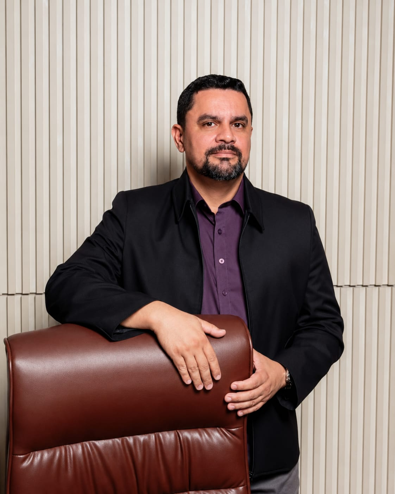
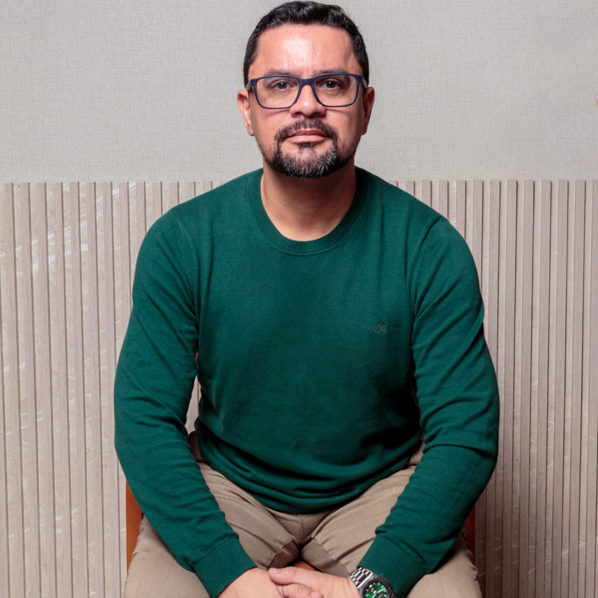
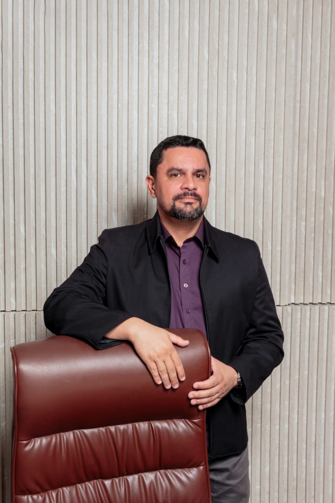
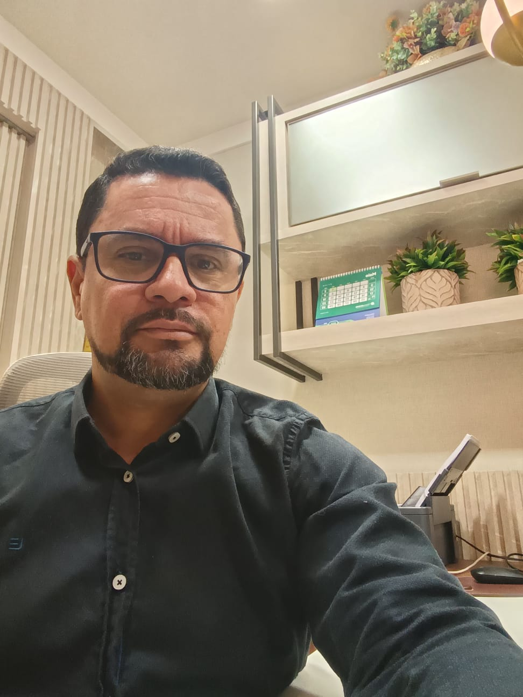
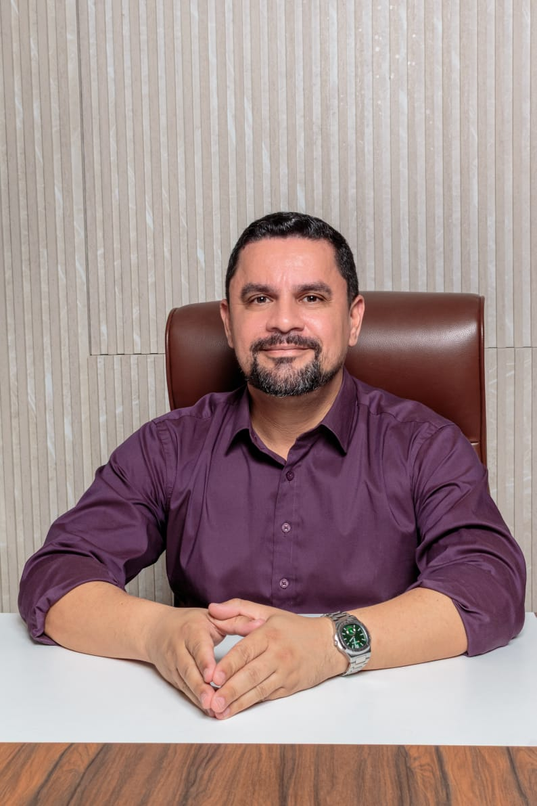
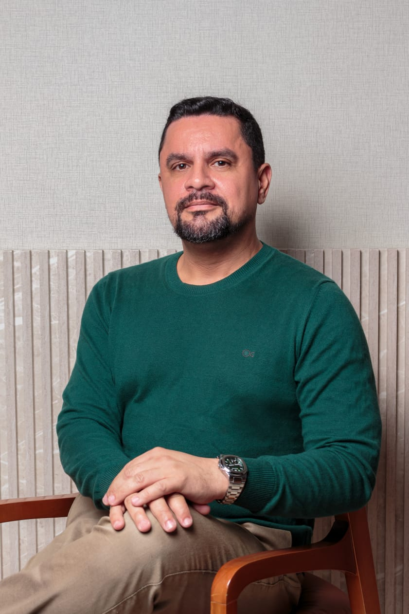
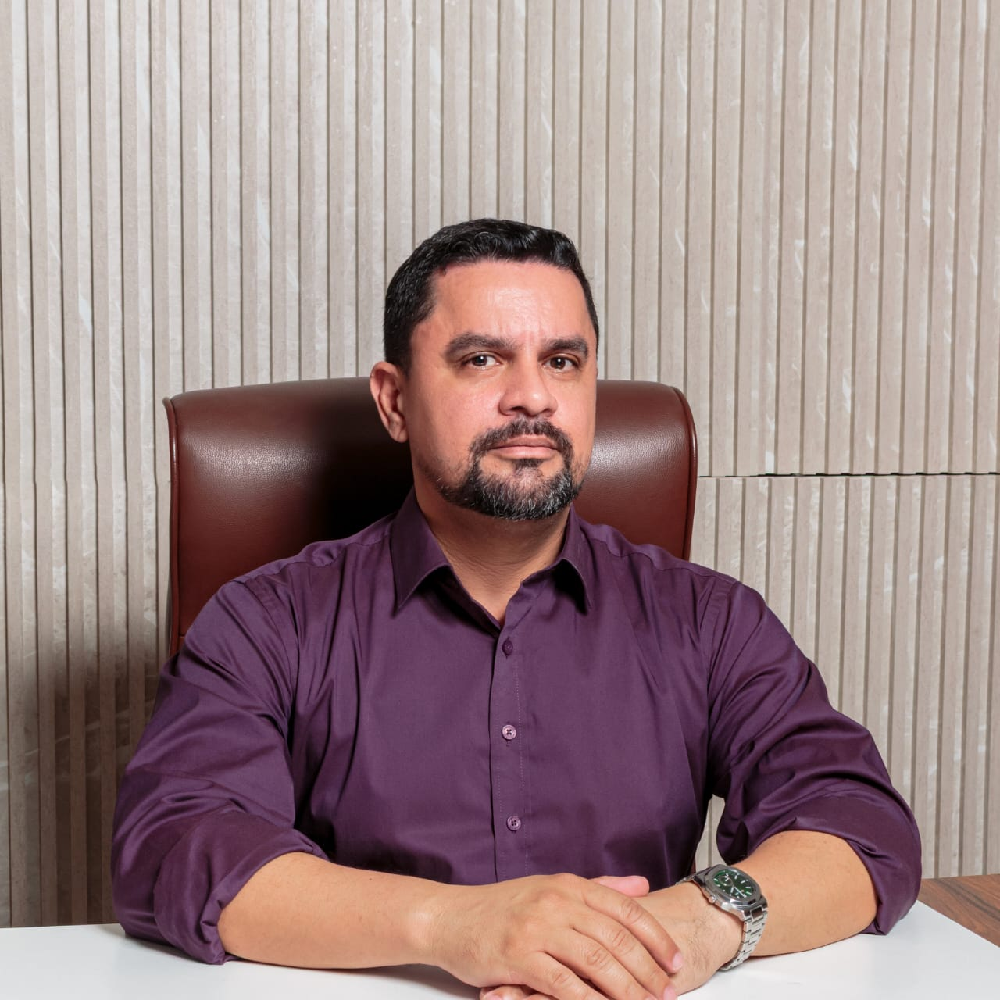
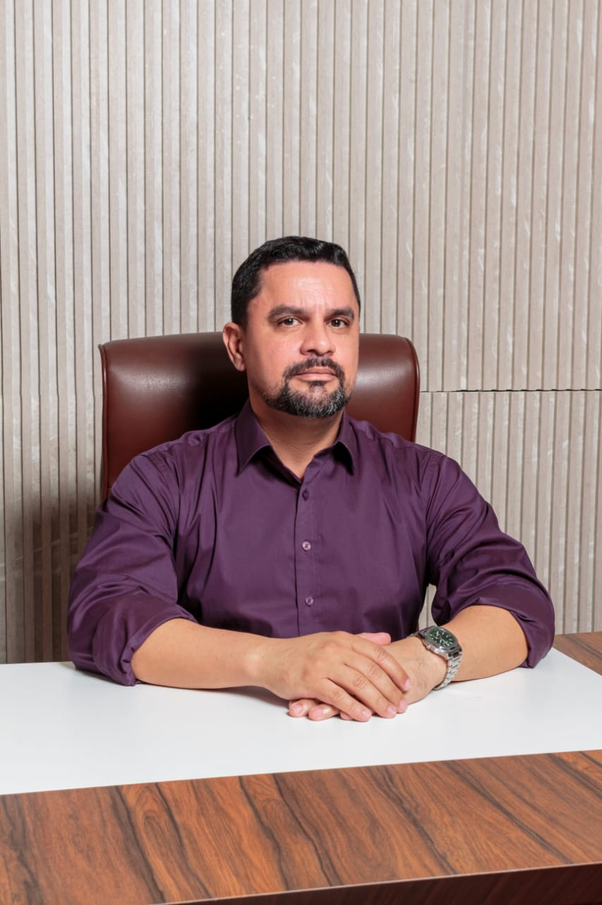

Ansiedade constante, exaustão e a sensação de que pedir ajuda é fraqueza — tudo isso tem tratamento. Psicoterapia TCC com protocolo científico para quem quer mais qualidade de vida e saúde emocional.
16/8817
Registro ativo
Protocolo
científico
Online para
todo o Brasil





Sem burocracia. Do primeiro contato à primeira sessão em menos de 48 horas.
Me manda uma mensagem no WhatsApp. Você conta brevemente o que está vivendo — sem julgamento e sem compromisso. Respondo em até 24 horas.
Conversamos sobre sua situação, seus objetivos e como funciona o processo terapêutico. Você decide com calma, sem pressão.
Sessões semanais com foco em resultados concretos. Você sai de cada sessão com ferramentas reais para aplicar no dia a dia.
A Terapia Cognitivo-Comportamental é a intervenção psicológica mais estudada do mundo para transtornos de ansiedade.
Psicólogo clínico com especialização em TCC, neuropsicologia e neuromodulação. Mais de 8 anos ajudando pessoas a recuperar qualidade de vida.
Psicólogo Clínico
CRP 16/8817Sou psicólogo especializado em ansiedade, estresse e burnout com abordagem Cognitivo-Comportamental (TCC) — uma das terapias com maior suporte científico no mundo para esses quadros.
Meu trabalho une protocolo técnico e escuta real. Aqui você não vai ouvir frases genéricas: vamos entender o que está acontecendo com você e construir juntos um caminho concreto de mudança.
Atendo presencialmente em Colatina-ES e online para todo o Brasil.
Cada atendimento é construído a partir do que você está vivendo — sem fórmulas prontas, com ciência e presença real.
Tratamento especializado para ansiedade generalizada, síndrome do pânico, fobia social, burnout e estresse crônico. Protocolo TCC com base em evidências.
Adultos · Atendimento Online · Todo o BrasilAvaliação completa de atenção, memória, funções executivas e linguagem com laudo técnico detalhado — para diagnóstico e reabilitação cognitiva.
Laudo · TDAH · Memória · Funções ExecutivastDCS, taVNS e neurofeedback como recursos terapêuticos complementares para ansiedade, cognição e regulação emocional.
tDCS · taVNS · Neurofeedback · BiofeedbackTCC não é conversa vaga. É um processo estruturado com técnicas específicas, metas claras e resultados mensuráveis.
Intervenções validadas pelos principais estudos em psicologia clínica, sem achismo ou improvisação.
Espaço seguro para você trazer o que não consegue falar em mais lugar nenhum — com total sigilo profissional.
Cada sessão tem objetivo. Você sai com ferramentas reais para aplicar na sua vida, não só com desabafo.
Quando indicado, recursos como neuromodulação e neurofeedback potencializam os resultados da psicoterapia.
Responda as 7 perguntas abaixo e receba uma estimativa do seu nível de ansiedade nas últimas 2 semanas.
1. Sentir-se nervoso(a), ansioso(a) ou no limite
2. Não conseguir parar ou controlar as preocupações
3. Preocupar-se demais com situações diferentes
4. Dificuldade para relaxar
5. Ficar tão agitado(a) que é difícil ficar quieto(a)
6. Ficar facilmente irritado(a) ou aborrecido(a)
7. Sentir medo como se algo terrível fosse acontecer
Instrumento GAD-7 — Spitzer et al., 2006. Validado em pt-BR (Moreno et al., 2016).
Um pouco do consultório, do dia a dia e de conteúdo educativo sobre saúde mental.



É normal ter dúvidas. Aqui estão as respostas para as mais comuns.
Sem compromisso. Você conta o que está vivendo e a gente vê juntos como posso ajudar.